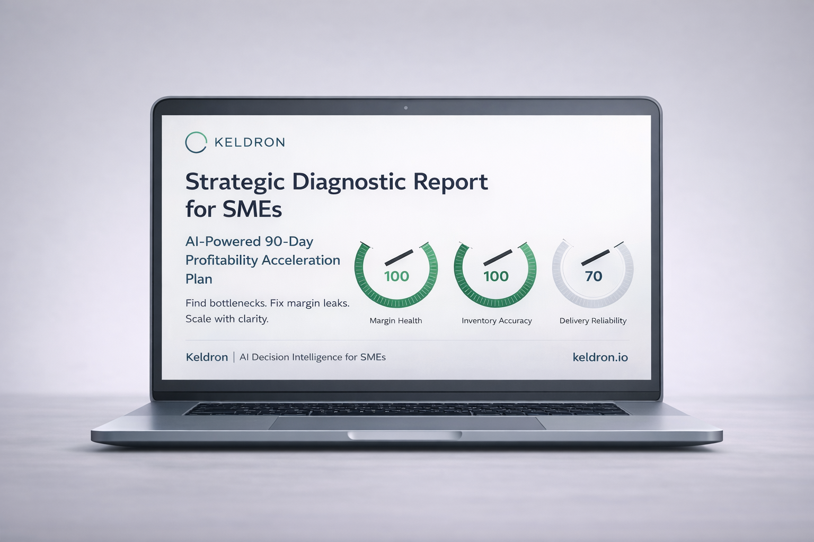

AI-powered profit leak finder for owner-led businesses
Most small businesses are losing profit in places they can't see.
Keldron finds your biggest bottleneck or profit leak in minutes — then shows you what to fix first, in plain English. No dashboards. No jargon. No sensitive data.
3 minutes · No calls · No spreadsheet uploads · Instant report
Built by an operator with 27+ years across manufacturing, retail, distribution, and supply chain — for founders and SMB owners who need decision clarity fast, without weeks of consulting.

If any of this sounds familiar, start here:
Sales are coming in, but profit still feels weak
You're working hard, but growth still feels stuck
You know something is off — but not where to fix first
You want clear action, not another dashboard
The reality for most owner-led businesses
Cash flow uncertainty
of small businesses rank cash flow uncertainty among their top 3 concerns
Ocrolus / OnDeck, 2025
Declining profits
of small businesses reported declining profits in 2024 — many without knowing why
NFIB Survey, 2024
Not using AI yet
of small businesses are not yet using AI to improve operations or margins
Vena / Intuit Research, 2025
In 27 years running operations and supply chains across manufacturing, retail, and distribution, I watched smart business owners make expensive decisions with incomplete information — not because they weren't capable, but because they had no fast way to see where the real problem was. Keldron is what I wished they'd had.

Taufiqur Rahman
Founder & CEO, Keldron.io · 27 years in operations, supply chain & growth
What Keldron helps you spot fast
No jargon. No complex setup. Just clear answers to the questions keeping you up at night.
Hidden profit leaks
Pricing gaps, dead stock, process waste, and execution drag that quietly cost you margin every month.
Your real bottleneck
The one issue slowing your growth, cash flow, or output — not the symptoms, the root cause.
What to fix first
The highest-leverage next move — not a 40-page strategy document, a clear and specific starting point.
How to track progress
Simple KPIs for the next 30–90 days so you know whether the fix is working — without a data analyst.
See the exact type of report you'll get
A plain-English breakdown — before you commit a single minute.
Executive Summary
Your biggest issue, why it matters, and the clearest path forward — in plain language.
Root Causes
What's actually driving the problem — not just the surface symptoms you can already see.
Top 3 Actions + Quick Wins
The highest-leverage moves to make first, including fast wins you can act on this week.
KPI Framework + 30–90 Day Plan
A simple measurement system and sequenced roadmap so you know what good looks like.
See the full report format before you start — no signup required.
How it works
Three steps. No technical setup. No consultants needed.
Answer a few simple questions
No sensitive numbers. No spreadsheets. Just top-line business reality — the kind of things you already know about your own business.
Keldron identifies your biggest issue
It looks for likely profit leaks, operational bottlenecks, and execution gaps based on your answers and your business type.
Get a plain-English action report instantly
See what to fix first, what's likely causing it, and how to measure progress — ready in minutes, not weeks. Download it, share it, act on it.
Built for owner-led businesses that need clarity fast
Best fit if you run a business where profit, process, or growth feels weaker than it should.
Retail
Wholesale & Distribution
Light Manufacturing
Local Services
And especially if: margins feel tighter than they should · growth feels messy · the team is busy but results feel flat · you need clarity without hiring a consultant
Common questions
Who gets the most value from Keldron?
How fast do I get the report?
Is this accounting software?
Do I need to upload sensitive financial data?
Can I see a sample report before I start?
Will someone call me?
How do you handle my data?
Stop guessing what's wrong.
Find the biggest leak. See what to fix first. Start free.
Find My Biggest Leak — FreeNo credit card. No calls. Takes 3 minutes.
— Keldron